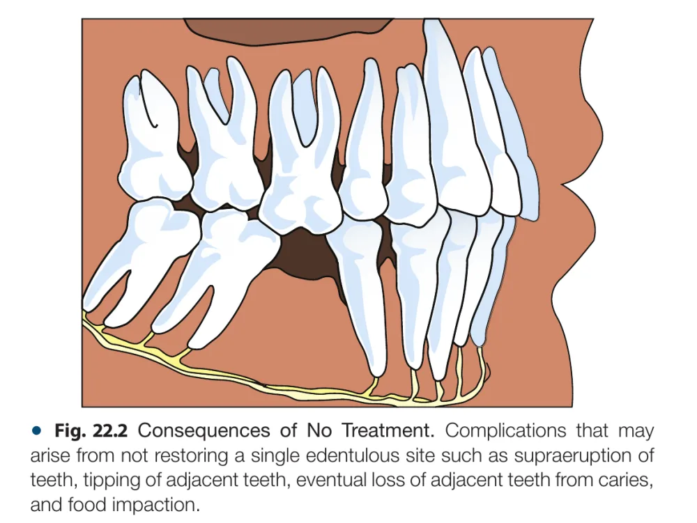
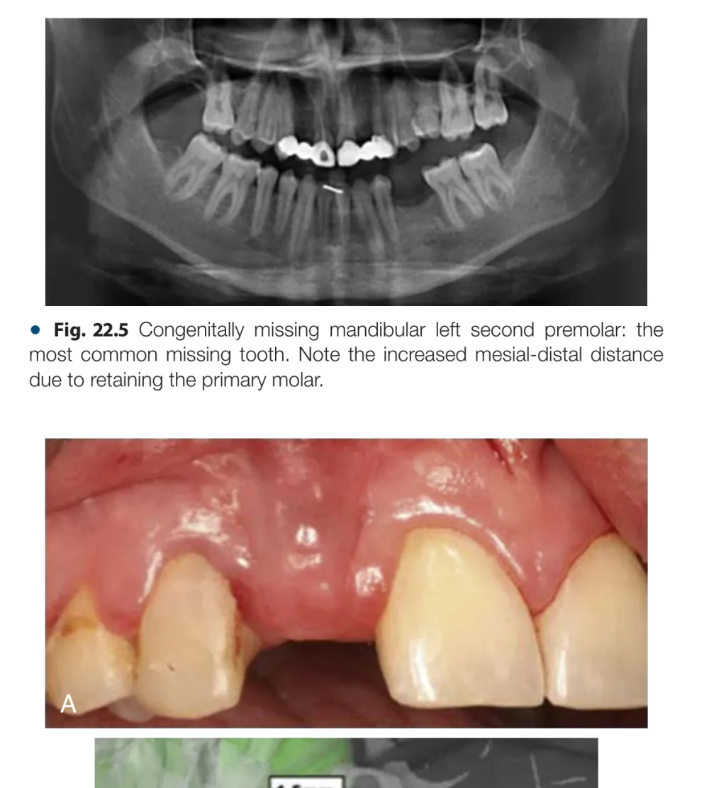

نسخه استخراجشده؛ ترجمه یا تأیید علمی انجام نشده است. وضعیت: captured
تعریف: «نبود یک یا چند دندان بهعنوان آنودانتیا شناخته میشود و ممکن است کامل (نادر) یا نسبی (که هیپودانتیا هم نامیده میشود) باشد.»
و یک مقایسهی شیوع: «این وضعیت چندین برابر شایعتر از دندانهای اضافی (سوپرانومرری) است.»
علت اصلی: «علت اولیهی آنودانتیای نسبی (بهجز مولرهای سوم) وراثت خانوادگی است، و نرخ بروز از ۱٫۵ درصد تا حدود ۱۰ درصد در جمعیت آمریکا متغیر است.»
و تفاوتهای جمعیتی که ارزش دانستن دارد:
• «غیبت مادرزادی کمتر در آسیاییها و آمریکاییهای آفریقاییتبار (۲٫۵ درصد) رخ میدهد تا در سفیدپوستان (۵٫۱۵ درصد).»
• «بالاترین میانگین در کشورهای اسکاندیناوی گزارش شده — ۱۰٫۱ درصد در نروژ و ۱۷٫۵ درصد در اسکولتـلاپهای فنلاند.»
و سندرمها: «شمار زیادی سندرم در ادبیات وجود دارد که شامل دندانهای غایب متعدد میشوند، که دیسپلازی اکتودرمال شایعترینشان است.»
و یک رابطهی تشخیصی مفید: «همبستگی بالایی میان نبود دندان شیری و نبود دندان دائمی وجود دارد؛ با این حال، دندان غایب بیشتر در دندانهای دائمی رخ میدهد.»
یعنی اگر دندان شیری غایب بوده، احتمال غیبت دائمی بالاست — ولی عکسش لزوماً درست نیست.
و اکنون دادهای که باید حفظ کنی — بررسی پروندهی نزدیک به ۱۰٬۰۰۰ بیمار میان ۵ تا ۱۵ سال:
از میان همهی دندانهای تکیِ غایب:
• پرمولر دوم مندیبل: ۳۸٫۶ درصد — بیشترین
• انسیزور جانبی ماگزیلا: ۲۹٫۳ درصد
• پرمولر دوم ماگزیلا: ۱۶٫۵ درصد
• انسیزور مرکزی مندیبل: ۴٫۰ درصد
• بقیهی دندانها تنها ۰٫۵ تا ۱٫۸ درصد — و مولر اول ماگزیلا کمترین درگیری را دارد.
به تمرکز این داده دقت کن: سه دندان نخست، بیش از ۸۴ درصد همهی موارد را میسازند. پس اگر با یک دندان غایب مادرزادی روبهرو شوی، به احتمال زیاد یکی از این سه است.
و یک تفاوت جنسیتی گزارششده:
«پرمولر دوم غایب مندیبل عمدتاً در بیماران مرد رخ میداد، و انسیزور جانبی غایب ماگزیلا عمدتاً در بیماران زن.»
و چند دندان غایب: «شایعترین دندانهای ازدسترفتهی متعدد (بهجز مولرهای سوم) انسیزورهای جانبی ماگزیلا هستند، سپس پرمولرهای دوم مندیبل و پرمولرهای دوم ماگزیلا.»
و دو عدد که مقیاس مسئله را روشن میکنند:
«خوشبختانه، کمتر از ۱ درصد افرادی که دندان غایب دارند، بیش از دو دندان غایب دارند، و کمتر از ۰٫۵ درصد این گروه بیش از پنج دندان دائمی غایب دارند.»
و: «در اکثر کودکان با بیش از پنج دندان غایب، این وضعیت به دیسپلازی اکتودرمال مربوط است.»
پس قاعدهی عملی ساده است: یک یا دو دندان غایب معمولاً یک یافتهی منفرد است. بیش از پنج دندان غایب، یک هشدار سیستمیک است و باید به فکر ارزیابی سندرمی باشی.

در درس پیش دیدی که پرمولر دوم مندیبل شایعترین دندان غایب مادرزادی است. حالا میبینیم که این جایگاه یک ویژگی خاص دارد.
«یک پرمولر دوم غایب مادرزادی مندیبل بیشتر اوقات یک مولر دوم شیری دارد.»
یعنی جایگاه خالی نیست؛ دندان شیری هنوز آنجاست. و همین یک پنجرهی درمانی میسازد که در هیچ جایگاه دیگری وجود ندارد.
و راهبرد ارتودنسی — و باید مرحلهبهمرحله دنبالش کنی:
گام یکم: «در برخی موارد، مولر دوم شیری ممکن است در سن تقریبی ۵ تا ۶ سالگی کشیده شود.»
گام دوم: «این ممکن است اجازه دهد مولر دائمی در موقعیتی مزیالیتر رویش پیدا کند.»
گام سوم: «وقتی مولر اول شیری بهطور طبیعی از دست میرود (حدود سن ۹ تا ۱۱ سالگی)، پرمولر اول دائمی و مولر اول ممکن است بهصورت ارتودنسی کنار یکدیگر قرار داده شوند.»
و نتیجه: «این رویکرد نیاز به جایگزینی پرمولر دوم را از میان برمیدارد.»
حالا به این راهبرد خوب نگاه کن — چون درسی فراتر از خودش دارد.
در کودک، بهترین درمان برای این جایگاه ایمپلنت نیست. حتی پروتز هم نیست. بهترین درمان این است که فضا اصلاً به وجود نیاید. (در بزرگسالی که این فرصت از دست رفته، ایمپلنت معمولاً درمان انتخابی جایگزینی پرمولر دوم است.)
و این راهبرد به تشخیص زودهنگام — حدود ۵ یا ۶ سالگی — وابسته است. یعنی پنجرهی این تصمیم، دههها پیش از آنکه بیمار برای ایمپلنت به تو مراجعه کند، باز و بسته میشود.
پیامد عملی برای تو: اگر بیمار جوانی با غیبت مادرزادی میبینی، یا اگر رادیوگرافی کودکی نشان میدهد جوانهی پرمولر دوم وجود ندارد، این یافته باید فوراً به ارتودنتیست ارجاع شود — نه اینکه تا بلوغ برای «تصمیم ایمپلنت» صبر شود.
و اکنون سمت دیگر ماجرا — انسیزور جانبی ماگزیلا:
پرمولر دوم مندیبل «شایعترین» جایگاه غایب مادرزادی است، ولی انسیزور جانبی ماگزیلا «دشوارترین» جایگاه برای درمان.
و دلیلش را از یونیتهای پیش میتوانی خودت بسازی:
• در منطقهی زیبایی است — و از یونیت ۲٫۱ میدانی که تنها ۱۱ درصد بیماران خط لبخند بالا دارند، ولی این جایگاه در همهی خطوط لبخند دیده میشود.
• ماگزیلای قدامی بهطور پیشفرض D3 است — از یونیت ۲٫۳.
• ریج قدامی ماگزیلا اغلب پیکربندی ساعتشنی با تقعر لابیال دارد — پس استئوپلاستی کار نمیکند و افزایش استخوان لازم میشود.
• و فضای مزیوـدیستالی اغلب تنگ است — که با قاعدهی ۷ میلیمتری یونیت ۲٫۳ در تعارض میافتد.
و به همین دلیل است که در بحث دیویژن B، ایمپلنت باریک ۳ میلیمتری دقیقاً برای «انسیزورهای جانبی ماگزیلا یا قدامیهای مندیبل» آمده بود — این دو جایگاه، استثناهای پذیرفتهشدهی قاعدهی قطر هستند.
و یادت باشد که در همان بحث، این هشدار را دیدی: ایمپلنت باریک تقریباً دو برابر استرس کرستال و تقریباً سه برابر استرس در بار جانبی ایجاد میکند. پس این استثنا رایگان نیست؛ با پذیرش خطر بیشتر خریداری میشود و به همین دلیل زاویهی بار در آن باید زیر ۲۰ درجه بماند.
